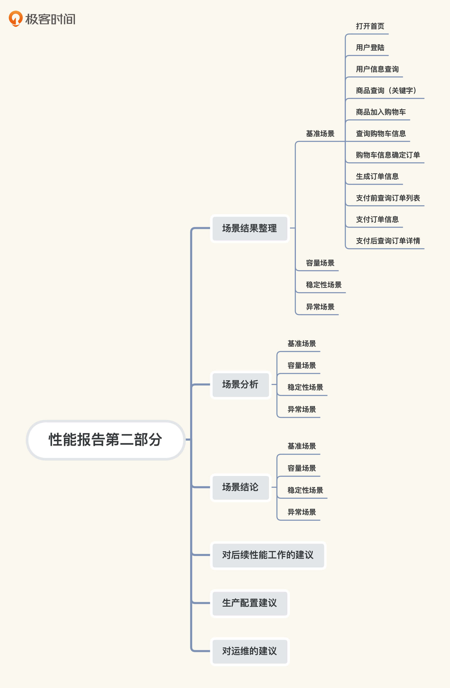
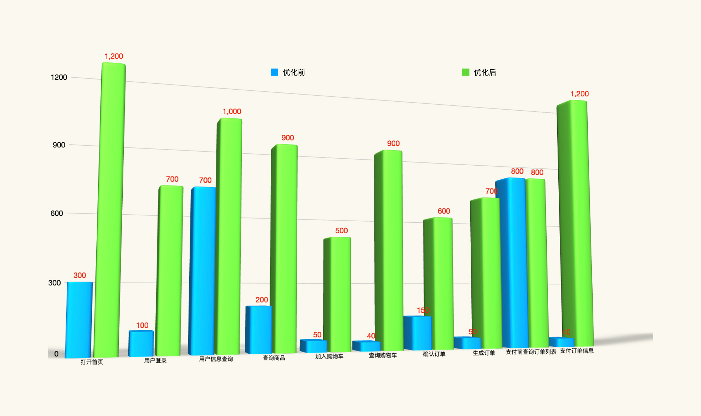
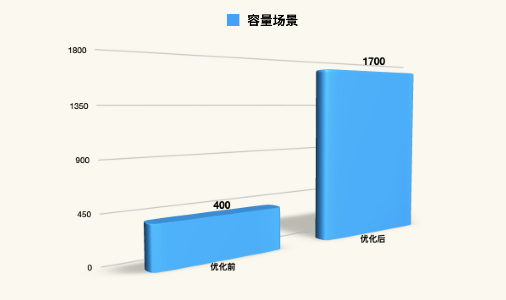
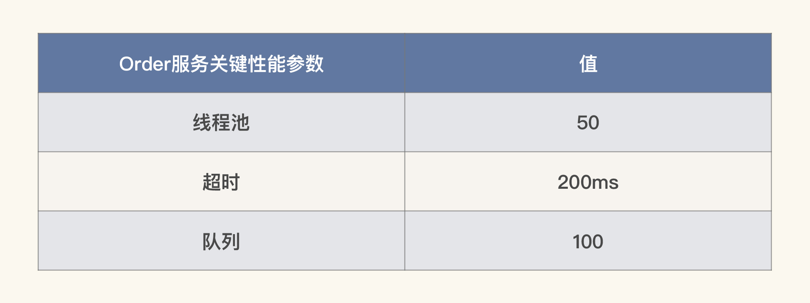

- 00 开篇词 打破四大认知局限，进阶高级性能工程师.md.html
- 01 性能工程：为什么很多性能测试人员无法对性能结果负责？.md.html
- 02 关键概念：性能指标和场景的确定.md.html
- 03 核心分析逻辑：所有的性能分析，靠这七步都能搞定.md.html
- 04 如何构建性能分析决策树和查找瓶颈证据链？.md.html
- 05 性能方案：你的方案是否还停留在形式上？.md.html
- 06 如何抽取出符合真实业务场景的业务模型？.md.html
- 07 性能场景的数据到底应该做成什么样子？.md.html
- 08 并发、在线和TPS到底是什么关系？.md.html
- 09 如何设计全局和定向监控策略？.md.html
- 10 设计基准场景需要注意哪些关键点？.md.html
- 11 打开首页之一：一个案例，带你搞懂基础硬件设施的性能问题.md.html
- 12 打开首页之二：如何平衡利用硬件资源？.md.html
- 13 用户登录：怎么判断线程中的Block原因？.md.html
- 14 用户信息查询：如何解决网络软中断瓶颈问题？.md.html
- 15 查询商品：资源不足有哪些性能表现？.md.html
- 16 商品加入购物车：SQL优化和压力工具中的参数分析.md.html
- 17 查询购物车：为什么铺底参数一定要符合真实业务特性？.md.html
- 18 购物车信息确定订单：为什么动态参数化逻辑非常重要？.md.html
- 19 生成订单信息之一：应用JDBC池优化和内存溢出分析.md.html
- 20 生成订单信息之二：业务逻辑复杂，怎么做性能优化？.md.html
- 21 支付前查询订单列表：如何分析优化一个固定的技术组件？.md.html
- 22 支付订单信息：如何高效解决for循环产生的内存溢出？.md.html
- 23 决定容量场景成败的关键因素有哪些？.md.html
- 24 容量场景之一：索引优化和Kubernetes资源分配不均衡怎么办？.md.html
- 25 容量场景之二：缓存对性能会有什么样的影响？.md.html
- 26 稳定性场景之一：怎样搞定业务积累量产生的瓶颈问题？.md.html
- 27 稳定性场景之二：怎样搞定磁盘不足产生的瓶颈问题？.md.html
- 28 如何确定异常场景的范围和设计逻辑？.md.html
- 29 异常场景：如何模拟不同组件层级的异常？.md.html
- 30 如何确定生产系统配置？.md.html
- 31 怎么写出有价值的性能报告？.md.html
- 我们这个课程的系统是怎么搭建起来的？.md.html
- 结束语 做真正的性能项目.md.html
- 捐赠
31 怎么写出有价值的性能报告？
你好，我是高楼。
在性能项目中，有三个文档在我看来是最为重要的，分别是性能方案、性能报告和调优报告。在第5讲中，我们已经给出了性能方案的完整内容。而调优报告，其实我已经不用写了，因为我们前面对每个场景的分析全都是调优的内容。
今天这节课我们来看看性能报告。性能报告在项目中一般被称为“性能测试报告”。不过，接下来我会弱化“测试”这两个字，因为我会将整个性能项目各方面的内容都包含在内。
性能报告是一个性能项目的总结，是性能价值的最终体现，所以性能报告是非常重要的。就像我们减肥的时候经常会说“三分运动七分吃”，性能报告也一样，我们也可以说它是“三分干活七分报告”，也就是说干活的辛苦都是留给自己体会的，报告如果做得不好，你再累、再辛苦，所有的付出都会付诸东流。
但是，我看到在当前性能市场中，很多性能报告都写得非常潦草，要么是数据收集得不完整，要么就是结论描写得不合理，让本来做得很好的性能项目没有体现出价值。
那怎么写出有价值的性能报告呢？今天我们一起来看看。
性能报告要给出明确的结论
在性能报告中，有一个环节应该是大部分人的恶梦，那就是给出明确的结论。
什么是明确的结论呢？我先给你列举几个常见的结论描述。
- 容量场景结论：
描述1：服务器资源有明显性能瓶颈，建议升级或增加服务器；存储性能差，建议更换性能更好的存储；某服务有明显的性能瓶颈，建议开发人员优化。
描述2：测试调优前50TPS，测试调优后100TPS；也有人说，测试调优前有错，测试调优后没有错；测试调优前CPU使用率90%，测试调优后CPU使用率50%；测试调优前资源消耗1000C2000G，测试调优后资源消耗500C1000G。
描述3：在100并发用户数下，某系统各功能点的平均响应时间均满足性能指标，功能点TPS总和为3000，成功率均为100%，各服务器资源平均使用率均在指标范围内；某系统在200并发用户时，系统处理能力为4000TPS，继续增加并发用户数时，系统处理能力下降。
描述4：系统可支持2000万人同时在线，20000人并发。
- 稳定性场景的结论：
某系统在400并发用户下稳定运行了120小时，各交易平均响应时间小于性能指标要求, TPS基本呈平稳趋势，交易成功率为100%，各服务器资源使用率趋势平稳，满足性能需求指标。
- 批量场景的结论：
A业务联机批量（批量交易ID：001、002、003）、B业务联机批量（批量交易ID：004、005）和C业务联机批量（批量交易ID：006）执行时长为130000毫秒、10000毫秒、1000毫秒、12000毫秒、10000毫秒、160000毫秒，满足性能指标要求。系统资源使用情况均满足指标要求。
此外，还有更多的结论描述，我就不一一列举了。
你乍一看这些结论，是不是觉得还挺合理的？确实是这样，如果我们只看一个报告的结论，很难看出结论本身有什么问题，我们最多能知道的就是这个结论偏向哪个层面（技术层面或业务层面）。
但是，在上述容量场景结论的几个描述中，描述1显然是不合格的结论，因为没有一句话是具体的。我不建议你用“明显”、“建议”、“差”、“可能”之类的词来写性能结论，这样的词都不够精准。
描述2看起来已经非常精准了，不过只描述了技术的角度，并没有给出系统是否可以支撑业务的结论；而描述3中规中矩，但你心里要清楚，像“服务器平均使用率均在指标范围内”这样的描述，其中的这个“指标”是有具体值的；描述4非常直接地说明了业务的结论，我觉得比较合理。
对于稳定性和批量场景的结论，你思考一下，我就不一一点评了。
我们说了这么多，你可能会奇怪，那到底性能结论要写成什么样呢？我们需要明确，性能报告表达的是业务系统的性能结论。
曾经，某公司的性能工程师拿出一份报告给我看，我看过之后问：“你这份报告是想表达自己干得有多累吗？”对方答：“不是呀，我是想表达这个项目做得不错。”我说：“你这里面并没有说哪里做得不错呀，我只看到了你们干得有多累……”
为什么会出现这种情况呢？主要是因为在他这样的报告中，把用了多少人、干了多长时间、做了哪些工作都写得清清楚楚，但在结论部分却是非常笼统的描述，就像前面我们举例的实时业务容量场景的第一个描述那样。
于是，我告诉他，老板不需要看这样的报告，如果你要给老板做汇报，简明扼要即可，不用写那么花哨。我们的报告不是用来展现自己做得有多么辛苦，也请你务必牢记这一点。
先确定受众，再写性能报告
那性能报告应该写成什么样呢？这里我再给你举两个例子。
之前我做过一个性能项目，业务目标很明确：一小时完成6000万用户的完整业务流程。在项目结束之际，我写了一个Word版的详细报告，大概80页左右。而在给客户汇报的时候，我只用了一份不到10页的PPT。
在第一页PPT上，我只写了两个数据：
并在汇报时说：“根据我们场景执行、分析、优化后的结论来看，当前系统可以一小时支持6100万的完整业务流，高于业务目标的6000万。”
然后，我接着说：“如果各位有兴趣，我可以大概讲一讲这个目标是怎么实现的。”这时候，你要注意，如果大家没反应，那就接着讲下去，不用讲得太细，只要笼统概括一下专业内容即可。
如果在你讲完第一页PPT后，有人开始聊待会儿去哪庆祝的话题，那就没必要再往下讲了。因为在汇报的场合里，专业技术的内容可能并不是受欢迎的话题，老板听得索然无味，业务方也听得一头雾水。要是有人对技术细节感兴趣，你到时候可以多讲两句。
总之，做性能汇报时，控场很重要，我们要引导现场，而不是被现场引导。
我还做过一个性能项目，大概耗时三个月，几乎每天都加班加点，非常辛苦。在写汇报PPT时，我首先按逻辑把能想到的内容全都写了出来，总共写了120多页PPT（这是我写汇报PPT的一个习惯，就是先尽量写全，然后删减）。
在汇报的前一天晚上，我看着这120多页的PPT直犯迷糊，我没想到自己会整理出这么多东西。不过，我心里清楚，这些内容肯定不是汇报里该有的，所以，我决定删减。第一遍，我删到了60页左右，还是太多了；第二遍，我删到了40页，还是觉得多；第三遍，我删到了20页，这才感觉差不多了。
于是，在那次四十多人的汇报会议中，我用这20页的PPT只讲了不到10分钟。在汇报结束时，我说：“这些就是我们的结论了，如果在场有技术人员对项目的具体实施过程感兴趣，可以看一下我们在会前发出的240多页的Word版技术报告。要是各位没有疑问，我的汇报就到这里了。”
汇报结束后，大家的反应都还不错。
我讲这两个案例是为了告诉你，在我的逻辑中，性能报告应该有两种表现形式：
尽量详细的技术型报告：这种报告通常是Word、PDF、HTML形式，报告内容包括项目背景、测试范围、需求指标、工具环境、数据量级、业务模型、场景执行策略、场景结果整理、场景结果分析、结论、问题汇总、后续性能工作建议、运维建议。
尽量简单的汇报型报告：这种报告通常是PPT、Keynote形式，报告内容包括结论、基本信息描述（用几个简单的页面概括一下即可）、问题汇总、后续性能工作建议、运维建议。
第一种报告是给技术人看的，第二种报告显然是在汇报场合中用的。
所以，我们在写报告的时候就要先考虑清楚，报告是给谁看，这一点至关重要。给领导看，不用过于细节；给技术人员看，不要过于笼统。
另外，我要向你多嘱咐一点，在汇报的场合，切忌与提出异议的人争论。即便有人提出的问题很尖锐，你也一定要磨圆了再回答，在这一过程中要不退不让、不卑不亢。不退不让，是因为你是汇报人，你是专业的，你要控制全场；不卑不亢，则是一种沟通的能力和技巧，不要让听汇报的人觉得你骄傲自负，接受不了别人的意见。
性能报告具体怎么写？
通常我写性能报告都是不用模板的，因为基本的大纲是明确的，而我刚才罗列的技术性报告中的内容，就已经足够了。至于更具体的细节，每个项目肯定是不同的。如果你要用模板的话，容易限制住思维，我建议你最好自己一个字一个字去写报告。
由于我们这个课程的示例项目是一个非常完整的项目，下面我们就以此为例，看看性能报告具体该怎么写。
首先，我们需要明确的是，一个完整的性能报告基本上可以分为两大部分：
第一部分是执行场景之前的信息，也就是这里第5讲方案中所列的部分，比如项目背景、测试范围、业务模型、性能指标、系统架构图、软硬件环境、压力工具及监控工具、数据、场景设计及报告策略、监控设计。
第二部分是执行场景之后的信息，包括场景结果整理、场景结果分析、结论、问题汇总、后续性能工作建议、运维建议。
在你自己的项目中，性能报告倒是不用这么完整，可以做相应的删减。
关于第一部分的内容，我在第5讲中已经给出详细的信息了，在这里不再赘述。接下来，我们重点看看第二部分。
在第二部分中，我们要整理各场景的结果，整体结构如下：

其中，“场景结果整理”和“场景分析”两部分，在我们课程前面的案例分析中已经有很多描述了，我在这里就不重复了。你在写具体的项目报告时，直接贴上相应的截图，再加点描述即可。
现在，我们对应这个结构，看一看在我们这个课程的示例项目中，“场景结论”、“对后续性能工作的建议”、“生产配置建议”、“对运维的建议”分别是怎样的。
场景结论
- 基准场景
我们先画出每个业务的基准场景，在优化前和优化后的TPS对比图表：

通过这张图表，我们就能清楚地看出测试结果，我们在基准场景中努力做的所有优化，都体现在这个结果里了。
那我们要给出的结论是什么呢？其实，我们只需要一句话来总结：所有业务的基准场景都可以达到目标TPS。这一句是想表明，从基准场景的结果来看，每个业务不会成为混合场景中拖后腿的业务，这就是基准场景给容量场景提供的最有价值的信息了。
- 容量场景
我们先画出容量场景在优化前和优化后的TPS对比图：

通过图表，我们可以看到容量场景中所有优化的效果。当然，我们同样得给出一个结论：容量场景可满足线上业务的性能指标。
这个结论的来源是什么呢？就是前面我们预估的1000TPS。如果你要做汇报的话，可以展示这样一张图：
有了这张图之后，关于技术方面的实现，你想怎么描述都行，完全可以按照自己的喜好来。
不过，你要注意，”容量场景可满足线上业务的性能指标“这样的结论只是停留在技术层面，你要是想进一步给出具体的业务级和用户级结论，就得参考我们在第8讲中说的并发用户、在线用户、TPS、并发度等计算逻辑。
对于我们这个课程的示例系统来说，由于这是一个Demo系统，我们并没有生产数据来做在线、并发之类的数据统计，不过，为了给你一个更直接的结论，我在这里用第5讲中的业务模型和第8讲的数据来做一个计算过程说明。
根据第5讲中的业务模型，一个用户完整的接口级请求是11个，但并不是每一个用户都会完整地走完这11个接口。按照业务模型中的比例算下来，100个TPS（一个T对应着一次接口请求）可以支持54个并发用户，也就是说平均单个用户需要的TPS是：
\( 100\\div54\\approx1.85 \)
而当前的TPS是1700，所以，当前系统支持的并发用户数是：
\( 并发用户= \\frac{最大TPS}{单用户级TPS} = \\frac{1700}{100\\div54} \\approx 918 \)
我们再根据第8讲中的并发度2.4%，来计算对应的在线用户数：
\( 在线用户= \\frac{并发用户}{并发度} = \\frac{918}{2.4\\%} \\approx 38250 \)
计算到这里，我们就可以进一步写出更为具体的结论了：通过容量场景的结论可知，系统最大TPS为1700，系统可支撑最大918并发用户；系统可支撑最大38250在线用户。
我要特别说明一点：上面整个计算过程所用的数据，都来自于我们这个课程的示例项目。你在真实的项目中做计算时，可以使用这个计算逻辑，但具体的数据，还需要你们自己做相应的统计。
对于容量场景的结论来说，我们写到这里就可以了。如果你非常想描述场景的过程，那么根据我们这个课程的示例项目，你可以这样描述容量场景的细节：
在容量场景中，一共做了四个阶段的优化。第一阶段，优化了参数化数据导致响应时间不断上升的问题；第二阶段，优化了业务表索引问题；第三阶段，优化了资源使用不均衡问题；第四阶段，优化了磁盘慢导致的redis持久化问题。
做了上述优化之后，最大容量可达到1700TPS，支撑最大918并发用户、最大38250在线用户，业务最大的平均响应时间在200ms以下，完全满足线上业务容量的性能需求指标。同时，应用服务的CPU资源可达到80%左右，资源使用均衡。
你想把这样概括性的描述加在结论当中，也是可以的。但是，除此之外，不用再描述更多的内容了，我觉得没有什么必要。
- 稳定性场景
对于稳定性场景来说，最重要的结论就是所有的业务积累量和持续时间。根据第27讲中稳定性场景的结果，我们可以得出这样的结论：稳定性场景可持续时间超过16个小时，所有业务积累量可达到7700万以上，系统资源使用率稳定保持在80%左右。
你要是有足够的时间和资源，做好定时定量的归档策略、分库分表等动作，也可以扩展稳定性场景的持续时间和业务积累量。
- 异常场景
在执行异常场景时，我们模拟了几类异常问题，比如应用异常、操作系统异常、容器异常、虚拟机异常等。
根据执行结果，我在这里写一个笼统些的结论（如果你有兴趣，可以细化)：在异常场景执行过程中，TPS趋势符合预期，但应用未对异常情况进行处理，导致终端用户可以看到错误而不是友好提示，故存在Bug需要修复。
相信你从前面几节课中可以看到，我们能做的异常场景非常多。而我们在写结论的时候，对没有问题的场景，可以描述的笼统一些；对普遍存在的问题，也可以做一些笼统描述。因为如果把每一个场景都挨个描述一遍，实在是太长了。
对后续性能工作的建议
在我们这个课程的示例项目中，有三个典型的问题需要在后续的性能工作中完善，我大概描述一下：
定时任务必须和实时业务分离。这条建议只是针对我们这个开源项目写的，在真实的项目中，估计不会有人不分离定时任务和实时业务；
制定符合业务的定时定量归档计划和分库分表策略；
返回用户友好提示。
生产配置建议
关于生产配置建议，我们可以结合第30讲的内容进行总结。在我们这个课程的示例项目中，我做了三个参数的配置的确认过程，所以，我们只能列三个生产配置建议了：

在真实的项目中，你可以结合我提供的项目级性能配置树，来确认所有的生产配置，而这个表格中的内容也会比现在的丰富很多。
对运维的建议
其实写到这里，我们对运维的建议已经比较明确了：
做好项目级的全局监控设计和实现策略，并实现实时预警功能；
做好限流、降级熔断策略，并实现自动容量扩展功能；
结合项目级性能参数配置列表，在生产环境中做好相应的性能参数配置，以符合业务容量的要求；
实现生产环境的定时定量归档和分库分表策略。
对于更具体的建议，我们可以形成相应的文档，直接放在报告的附录中。
至此，我们的性能报告就非常完善了。
总结
写性能报告，其实是对前面的所有工作做一个总结。因此，性能报告中的所有数据来源都是确定的。至于表达的形式，我建议你直接明了，不要啰嗦。另外，尽量使用图来表达结论，不要用表格，因为表格无法呈现比较直观的趋势。
性能报告作为性能项目中最重要、最能体现性能价值的一个输出文档，我们做性能的人必须要学会编写。而在编写的过程中，我们一定要先考虑清楚受众是谁，然后从受众的角度考虑报告内容的表现形式。
在做汇报时，我们一定要做到简明扼要，不过分表达，但也不能遗漏。
课后作业
最后，请你思考一下：
- 考虑一下你之前编写的性能报告，和本篇的描述有什么不同？
- 根据专栏内容，尝试写一个你认为的性能报告。
记得在留言区和我讨论、交流你的想法，每一次思考都会让你更进一步。
如果你读完这篇文章有所收获，也欢迎你分享给你的朋友，共同学习进步。我们下这节课再见！
© 2019 - 2023 Liangliang Lee. Powered by gin and hexo-theme-book.